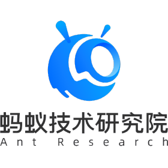

Ant Research
Research Intern @ Interactive Intelligence Lab
Advisor: Boyao Zhou and Xuan Wang
Jun. 2025 - Present
I'm now a second-year master's student in NJU-3DV Lab, supervised by Prof. Xun Cao and Prof. Hao Zhu. I received my bachelor degree at Nanjing University in 2024.
I am currently a research intern at Ant Research, working with Boyao Zhou and Xuan Wang.
My research interests lie in multimodal generation, embodied AI, and human-centric vision.

Ant Research
Research Intern @ Interactive Intelligence Lab
Advisor: Boyao Zhou and Xuan Wang
Jun. 2025 - Present

Nanjing University
M.S. student @ NJU-3DV
Advisor: Prof. Xun Cao and Prof. Hao Zhu
Sep. 2024 - Present
Nanjing University
B.Sc. in Electronic Information Science and Technology
Sep. 2020 - Jun. 2024
Outstanding Graduate Student of Nanjing University, 2025
Graduate Student Scholarship (First Class), 2024 & 2025
People's Scholarship, 2022 & 2023
Nanjing University 01 Electronic Scholarship (Top 10%), 2021